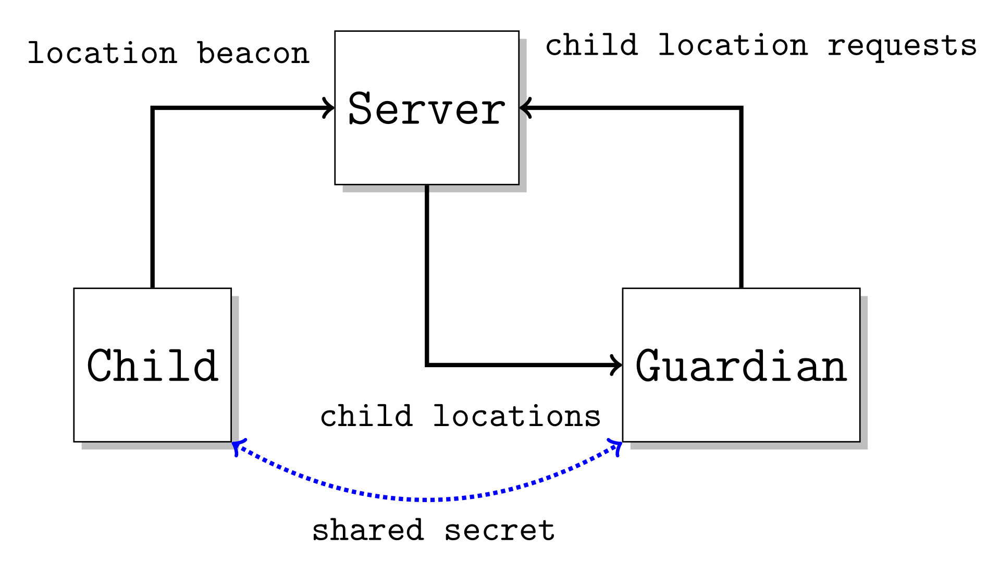
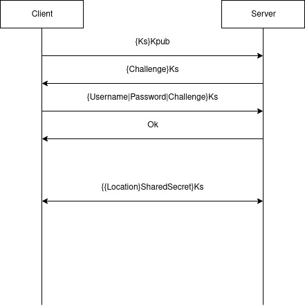
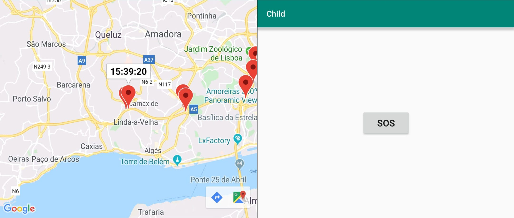

As a guardian you might want to track your child’s location to make sure they don’t stray too far from where they should be.
Among others it’s important that the child’s location be kept in absolute secret as it is a very sensitive piece of information.
There are 3 actors in the system:


